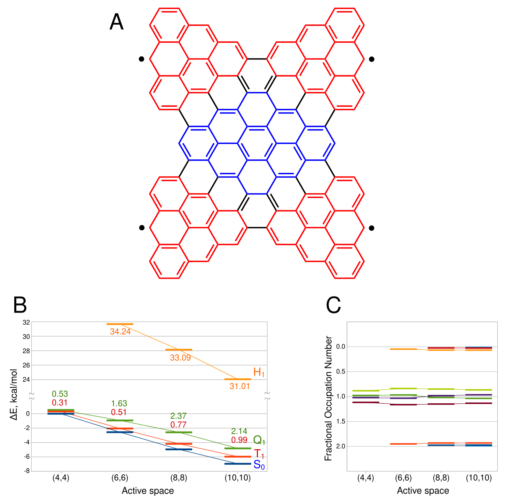

REKS Studio automatically derives and compiles the working equations of ensemble density functional theory for any active space - turning a twenty-year manual bottleneck into a binary catalogue.
REKS and its extensions, SA-REKS and SSR, treat strong electron correlation by letting orbitals take fractional occupations across an ensemble of electronic configurations - an accurate, low-cost alternative to expensive wavefunction methods.
But every larger active space needs its own working equations, derived by hand from scratch. The number of configurations and orbital-pairing schemes grows combinatorially with active-space size, so the derivation quickly becomes unmanageable. In practice, that has confined the method to its smallest case: two electrons in two orbitals.
The expensive parts of any electronic structure calculation are the two-electron integrals and the DFT quadrature grid. A naive implementation recomputes both for every configuration in the ensemble - which is exactly what makes it unfeasible.
REKS Studio computes them once per calculation and reuses them across every microstate, assembling each configuration's Fock matrix by weighted addition rather than running an independent KS-DFT calculation for it. That reuse, not any single algorithmic trick, is what brings a fully multiconfigurational treatment down to a cost comparable to ordinary DFT.
Making that reuse work for an arbitrary active space still requires the right working equations for each case. Those are generated automatically by a symbolic-algebra engine rather than derived by hand - necessary groundwork, but the speed comes from what happens with the equations afterward.
Computed once per calculation, regardless of how many configurations the active space produces.
Every configuration in the ensemble draws on the same integrals and grid, never recomputing them.
Configuration energies combine by weighted addition instead of separate SCF calculations.
Multiconfigurational accuracy at a cost that tracks ordinary Kohn–Sham DFT.
Sequential bond dissociation benchmarked directly against full configuration interaction.
Single, double, and triple bond breaking along full potential energy curves.
Benchmarked against FCI and experimental spectroscopic constants.
Open-shell diradical character tracked across increasing active-space size.
A synthesized magnetic quantum material — see below.
Tetra[3]trianguleno[3]rhombene is an open-shell nanographene whose magnetic energy levels have been mapped experimentally by scanning tunneling microscopy — but only partly explained by earlier calculations. Pushing the active space from four to ten electrons resolves the same magnetic ladder seen in the experiment, something smaller active spaces couldn't capture.

Computed ground (S0) and low-lying triplet, quintet, and heptet (T1, Q1, H1) state energies, in eV, across three treatments of the active space — the same widening that resolves the magnetic ladder against experiment.
REKS Studio is currently a development branch of Psi4, not yet a separate package or conda release. Building it follows Psi4's own build process — a working equations catalogue is generated and compiled in as part of the build, so no extra step is needed afterward.
Once built, REKS runs as an ordinary reference option — no separate binary or import. Below is a simplified REKS(4,4) job, adapted from a real input file.
Turns on the REKS method and sets the active space as [electrons, orbitals].
The state-averaged ensemble: which configurations participate in orbital optimization.
The state-interaction ensemble, defined independently of the SA set, mixed afterward for the final multi-state energies.
Extra determinants — such as a high-spin state — carrying their own weight in the SA ensemble to help SCF convergence, while staying out of the state-interaction step.
Working equations for arbitrary active spaces, compiled into a shared runtime at KS-DFT cost.
Extending the symbolic engine to derive gradients, enabling automated geometry optimization.
Simulating energy flow, bond rearrangement, and relaxation in strongly correlated excited states.
Exchange-correlation functionals designed for dynamic correlation alone, freed from also describing strong correlation.
REKS Studio automates and scales a method built up over two decades, largely by Michael Filatov and collaborators. The papers below trace it from its restricted-ensemble formulation through the multi-pair extensions and analytic derivatives REKS Studio generalizes.
M. Filatov S. Shaik. A spin-restricted ensemble-referenced Kohn-Sham method and its application to diradicaloid situations. Chemical Physics Letters, 304:429-437.
doi.org/10.1016/S0009-2614(99)00336-X ↗M. Filatov S. Shaik. Artificial symmetry breaking in radicals is avoided by the use of the ensemble-referenced Kohn-Sham (REKS) method. Chemical Physics Letters, 332:409-419.
doi.org/10.1016/S0009-2614(00)01257-4 ↗I. de P. R. Moreira, R. Costa, M. Filatov, F. Illas. Restricted ensemble-referenced Kohn-Sham versus broken symmetry approaches in density functional theory: Magnetic coupling in Cu binuclear complexes. Journal of Chemical Theory and Computation, 3:764-774.
doi.org/10.1021/ct7000057 ↗A. Kazaryan, J. Heuver, M. Filatov. Excitation energies from spin-restricted ensemble-referenced Kohn-Sham method: A state-average approach. Journal of Physical Chemistry A, 12:12980-12988.
doi.org/10.1021/jp8033837 ↗M. Filatov. Assessment of density functional methods for obtaining geometries at conical intersections in organic molecules. Journal of Chemical Theory and Computation, 9:4526-4541.
doi.org/10.1021/ct400598b ↗M. Filatov. Spin Restricted Ensemble Referenced Kohn–Sham Method: Basic Principles and Application to Strongly Correlated Ground and Excited States of Molecules. WIREs Computational Molecular Science, 5:146–167.
doi.org/10.1002/wcms.1209 ↗M. Filatov. Ensemble DFT Approach to Excited States of Strongly Correlated Molecular Systems. Topics in Current Chemistry: Density-Functional Methods for Excited States, 368:97–124.
link.springer.com/chapter/10.1007/128_2015_630 ↗M. Filatov, T. J. Martínez, K. S. Kim. Using the GVB Ansatz to Develop Ensemble DFT Method for Describing Multiple Strongly Correlated Electron Pairs. Physical Chemistry Chemical Physics, 18:21040–21050.
pubs.rsc.org/en/content/articlepdf/2016/CP/C6CP00236F ↗M. Filatov, F. Liu, K. S. Kim, T. J. Martínez. Self-Consistent Implementation of Ensemble Density Functional Theory Method for Multiple Strongly Correlated Electron Pairs. Journal of Chemical Physics, 145:244104.
aip.scitation.org/doi/full/10.1063/1.4972174 ↗M. Filatov, F. Liu, T. J. Martínez. Analytical Derivatives of the Individual State Energies in Ensemble Density Functional Theory Method. I. General Formalism. Journal of Chemical Physics, 147:034113.
aip.scitation.org/doi/10.1063/1.4994542 ↗M. Filatov, T. J. Martínez, K. S. Kim. Description of Ground and Excited Electronic States by Ensemble Density Functional Method with Extended Active Space. Journal of Chemical Physics, 147:064104.
aip.scitation.org/doi/10.1063/1.4996873 ↗M. Filatov, S. Lee, C. H. Choi. Computation of Molecular Ionization Energies Using an Ensemble Density Functional Theory Method. Journal of Chemical Theory and Computation, 16:4489–4504.
doi.org/10.1021/acs.jctc.0c00218 ↗M. Filatov, S. Lee, H. Nakata, C. H. Choi. Computation of Molecular Electron Affinities Using an Ensemble Density Functional Theory Method. Journal of Physical Chemistry A, 124:7795–7804.
doi.org/10.1021/acs.jpca.0c06976 ↗F. Liu, M. Filatov, T. J. Martínez. Analytical Derivatives of the Individual State Energies in Ensemble Density Functional Theory. II. Implementation on Graphical Processing Units (GPUs). Journal of Chemical Physics, 154:104108.
aip.scitation.org/doi/full/10.1063/5.0041389 ↗M. Filatov, S. Lee, C. H. Choi. Description of Sudden Polarization in the Excited Electronic States with an Ensemble Density Functional Theory Method. Journal of Chemical Theory and Computation, 17:5123–5139.
doi.org/10.1021/acs.jctc.1c00479 ↗